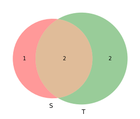

import sysprint(sys.executable)from IPython.core.interactiveshell import InteractiveShellInteractiveShell.ast_node_interactivity = "all"
/home/jcmint/anaconda3/envs/learningenv/bin/python
SetsSets are defined as a collection of elements, and can be defined explicitly {heads, tails}, or implicitly {1:9}, {A:Z}.  ## Convention - CAPITAL for sets, lowercase for its elements * An element can belong to (∈) or not belong to(∉) a set * A set can contain (∋) or lack a member (∌) * Repetition may or may not matter Different set types:
## Convention - CAPITAL for sets, lowercase for its elements * An element can belong to (∈) or not belong to(∉) a set * A set can contain (∋) or lack a member (∌) * Repetition may or may not matter Different set types: ## Sets in Python
## Sets in Python
myset = set([1,2,3])print("1.", myset)# Create an empty set: set() or set({})empty = set()print(empty)myset.add((2, '2', 0))myset.discard(0)print("3.", myset)# No way to add multiple elements to a set - instead, consider a union with a set that has the target elements
1. {1, 2, 3}
set()
3. {1, 2, 3, (2, '2', 0)}
False
4
Set visualization Venn diagrams can represent set members - elements appear in or out of a set. ## Visualizing sets in Python - venn diagrams with numeric elements * Necessary to install matplotlib and matplotlib-venn
## Visualizing sets in Python - venn diagrams with numeric elements * Necessary to install matplotlib and matplotlib-vennconda activate learningenvconda install matplotlibProceed ([y]/n)? yconda install -c conda-forge matplotlib-venn
import matplotlib.pyplot as pltimport matplotlib_venn as vennS = {1, 2, 3}T = {0, 22, 1, 3}venn.venn2([S, T], set_labels = {'S', 'T'})plt.show()
<matplotlib_venn._common.VennDiagram at 0x7ff80182c470>

Set RelationsReturn a logical value that describes the relations between sets. # SetsSets are defined as a collection of elements, and can be defined explicitly {heads, tails}, or implicitly {1:9}, {A:Z}.## Convention - CAPITAL for sets, lowercase for its elements An element can belong to (∈) or not belong to(∉) a set A set can contain (∋) or lack a member (∌) Repetition may or may not matterDifferent set types:## Sets in Pythonpythonmyset = set([1,2,3])print("1.", myset)# Create an empty set: set() or set({})empty = set()print(empty)myset.add((2, '2', 0))myset.discard(0)print("3.", myset)# No way to add multiple elements to a set - instead, consider a union with a set that has the target elements1. {1, 2, 3}set()3. {1, 2, 3, (2, '2', 0)}python# Test emptinessprint(not myset) # does myset contain no elements?print(len(myset))False4# Set visualizationVenn diagrams can represent set members - elements appear in or out of a set.## Visualizing sets in Python - venn diagrams with numeric elements Necessary to install matplotlib and matplotlib-vennconda activate learningenvconda install matplotlibProceed ([y]/n)? yconda install -c conda-forge matplotlib-venn``````pythonimport matplotlib.pyplot as pltimport matplotlib_venn as vennS = {1, 2, 3}T = {0, 22, 1, 3}venn.venn2([S, T], set_labels = {'S', 'T'})plt.show()pythons1 = {0, 1}s2 = {1, 0}s3 = {1, 0 , 1}s4 = {0, 2}s5 = {3, 4}# Set RelationsReturn a logical value that describes the relations between sets.## EqualityCode: ==Two sets are equal if they have exactly the same elements:
pythons1 = {0, 1}s2 = {1, 0}s3 = {1, 0 , 1}s4 = {0, 2}s5 = {3, 4}# Set RelationsReturn a logical value that describes the relations between sets.## EqualityCode: ==Two sets are equal if they have exactly the same elements:(True, True, False)
Since all elements need to be in both sets for the sets to be equal, Equality is difficult to achieve. ## Disjoint setsCode: isdisjoint(), !=Two sets are disjoint if they share NO values - overlap region is EMPTY. Empty set is disjoint with all sets except all other empty sets. 
(False, False)
Subset: issubset(), <=; strict: <If every element in a set is in another set, then it is a subset of that set. {0} is a subset of every set. If two sets are subsets of each other, then they are equal (A <- B & B <- A means A == B) A strict subset - a subset that is NOT equal to its superset.
A strict subset - a subset that is NOT equal to its superset. 
print("1.", s1 <= s2 , s1.issubset(s4))# Check for STRICT subset: using `<`print("2.", s1 < s2, s1 < {0, 1, 2})
1. True False
2. False True
Set OperationsObtain a set that is the result of an operation between sets.## Complement * Complement is a set of every element NOT in a set. * Not definable in python without defining the 'Universe' first. * De Morgan's Law: The Complement of the Intersection of two sets. ## Intersection:
## Intersection: intersection(), &* Intersection is a set of the common elements between sets. * The infinte set intersects every set.

({0, 1}, {0}, set())
Union: union, |Union is a non repetitive collection of elements in multiple sets. 
({0, 1}, {0, 1, 3, 4})
Set difference: .difference, -A - B is the set of elements in A but not B: 
(set(), {1}, {2})
Symmetric Difference (OR): symmetric_difference(), ^The set of elements that are in one but NOT BOTH sets:
(set(), {1, 2}, {0, 2, 3, 4})
Cartesian ProductsBasically, the Cartesian Product of two sets is the set of all combinations of the elements in both sets. You essentially generate a * b combinations where a and b are the number of elements in set A and B. For n sets, you generate a cartesian coordinate, an n element tuple ordered pair.* for A and B, it is the set A x B of (a, b) ordered pairs where a ∈ A and b ∈ B * The first element must come from set A, and likewise the second from B * The cartesian product of the real numbers, R2 = {(x, y): x, y ∈ R} is the cartesian plane, the 2D plane containing all read numbers * Likewise, if A and B are sets with real numbers, then A x B will produce a rectangle in the cartesian plane. * Tables are essentially cartesian products, as are 3D cubes (A x B x C)
 ## Generating Cartesian products in Python
## Generating Cartesian products in Python
from itertools import productfaces = set({'J', 'Q', 'K'}) # Jack, queen, Kingsuits = set({'Dia', 'Spa'}) #diamond, spadefor i in product(faces, suits):print(i)
('Q', 'Dia')
('Q', 'Spa')
('K', 'Dia')
('K', 'Spa')
('J', 'Dia')
('J', 'Spa')